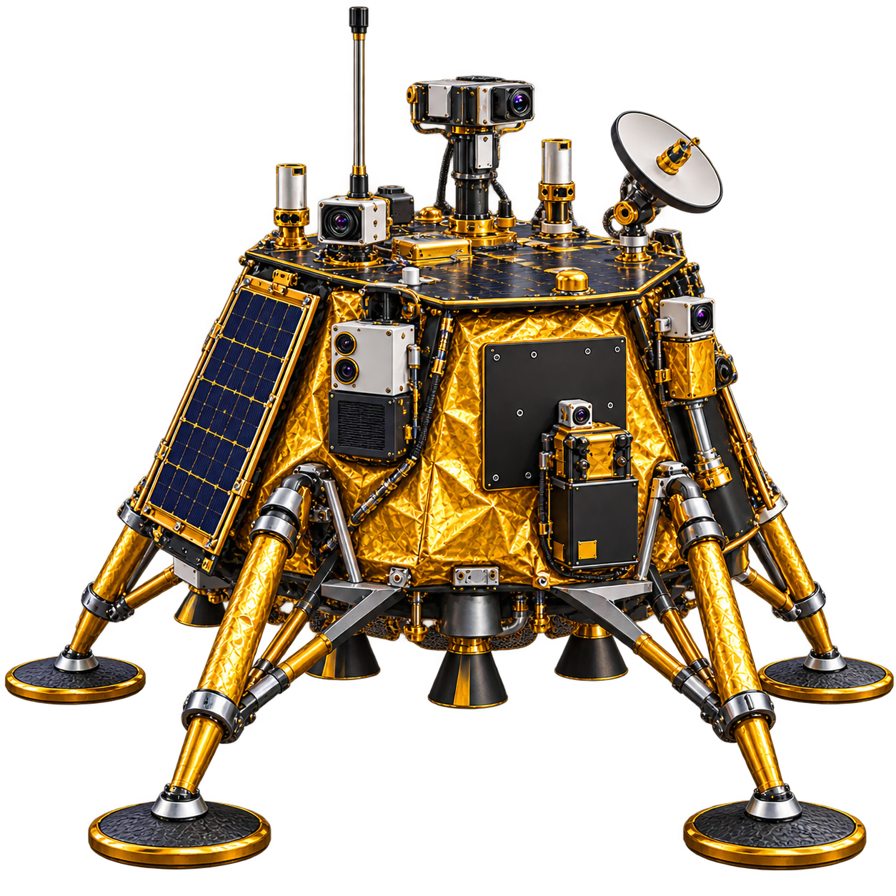

DRAG TO ROTATE · SCROLL TO ZOOM · SELECT A LANDING SITE
LUNAR COORDINATES · Select a location on the globeLatitude N/S · Longitude E/W · planetocentric
🇺🇸 Flags planted at Apollo 11 · 12 · 14 · 15 · 16 · 17 Markers use precise module landing coordinates as proxies; exact flagpole positions differ. Other nations’ landers are shown as mission markers, not planted flags.
Completed Landing siteMoon radius 1,737.4 km
FLIGHT LAB / DESCENT
Bring the lander home.
LUNAR GRAVITY · 1.62 m/s²
READY TO DESCEND
ALTITUDE180 m
VERTICAL SPEED0.0 m/s
FUEL100%
HORIZONTAL SPEED0.0 m/s

Detailed lunar lander reference art used in the simulator
↑ / W: thrust · ← → / A D: steer · Touch down inside the pad below 5.5 m/s
Apollo 11 was the first mission to bring Moon rocks back to Earth in 1969. Neil Armstrong and Buzz Aldrin collected samples from the Sea of Tranquility and the mission returned about 21.5 kg of lunar material.
Luna 16 followed in 1970 as the first robotic lunar sample-return mission, bringing back about 101 g of soil from Mare Fecunditatis.
MOON JUMP PHYSICSEQUATION OF MOTION
How the jump works on the Moon
Vertical position:y(t) = y₀ + v₀t − ½gMoont²
Vertical velocity:v(t) = v₀ − gMoont
Moon gravity:gMoon = 1.62 m/s². In this game the astronaut jump uses v₀ ≈ 3.42 m/s, reaching about 3.6 m maximum height — roughly twice the astronaut’s height — with an upward flight time of about 2.1 s and total airtime near 4.2 s.
The scene uses an accurate Moon-gravity jump height, shown at a clear visual scale so the motion is easy to read.
Climb out of the lander, board the rover, collect Moon sample rocks, land on the exact crater target, and return the samples.
YOUR LUNAR PASSPORT
Exploration achievements.
MISSION PATCHES
Achievements are stored in this browser. Revisit any mission to learn more.